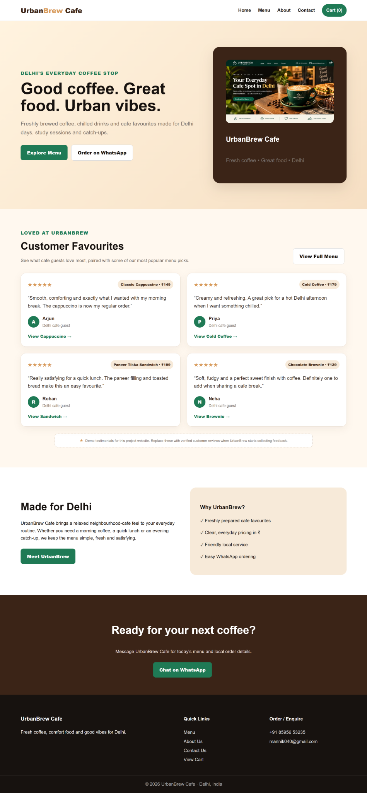

Project detail page
UrbanBrew Cafe — E-commerce Website Demo
This page presents screenshots from my Shopify store design assignment: homepage, menu/product listing, about, contact, and cart. Select Open full screenshot on any card to view the image by itself.
Note: These are screenshots of a demo project, not a currently operating online store.